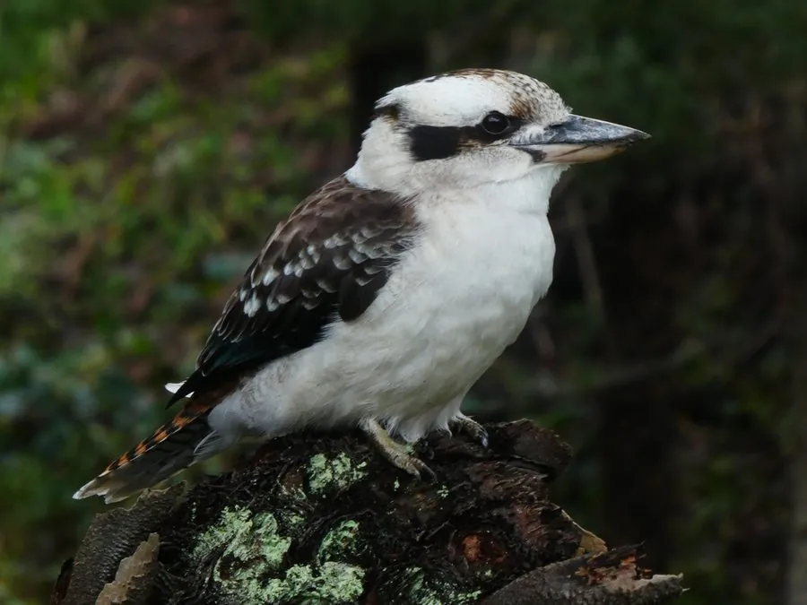

鸟类 · 动物界
笑翠鸟 Dacelo novaeguineae

澳大利亚特有的巨型翠鸟，叫声像人的狂笑声，常成家族群在林地中活动，捕食蛇、蜥蜴和小型脊椎动物。
- 分类
- 门脊索动物门纲鸟纲目佛法僧目科翠鸟科属笑翠鸟属
- 栖息环境
- 桉树林、开阔林地、河岸与城市公园，多在树洞或白蚁丘中营巢
- 地理分布
- 澳大利亚东部，塔斯马尼亚和西部有引入种群，中国无分布
- 保护级别
- IUCN 无危（LC）；澳大利亚特有种，中国无分布
物种志
笑翠鸟体长 40–46 cm，体重约 200–480 g，翼展 60–70 cm，是体形最大的翠鸟之一。它的头顶和翅膀呈褐色并带浅色斑，肩部和背部有淡蓝色斑块，腹部灰白色，尾羽栗红色带黑斑，喙粗壮而有力，呈黑灰色。它的体形比普通翠鸟大得多，姿态沉稳。
笑翠鸟是澳大利亚东部的特有种，栖息在桉树林、开阔林地、河岸和城市公园，常成家族群生活。它们以蛇、蜥蜴、昆虫、小鱼、蛙类和小型哺乳动物为食，会把较大的猎物在树枝上摔打后再吞下。笑翠鸟最著名的是它的叫声：清晨和傍晚，家族成员会齐声鸣叫，声音像一阵狂放的笑声，用来宣示领域。繁殖期在树洞或白蚁丘中营巢，每窝产卵 1–3 枚，孵化约 24–26 天，年长的雏鸟还会帮助喂养幼鸟。
形态与习性
- 食性蛇、蜥蜴、昆虫、小鱼、蛙类和小型哺乳动物
- 体长40–46 cm
- 体重约 200–480 g
- 翼展60–70 cm
- 繁殖每窝 1–3 枚卵，孵化约 24–26 天
- 寿命野外约 10–15 年
- 鸣叫清晨和傍晚家族齐鸣，声音像一阵狂笑
趣味知识
- 笑翠鸟的叫声像人在狂笑，常由家族成员齐声合唱。
- 它是体形最大的翠鸟之一，连蛇和小蜥蜴都敢捕食。
- 笑翠鸟会把较大的猎物在树枝上摔打几下再吞下。
- 年长的雏鸟会留下来帮助父母喂养下一窝弟妹。